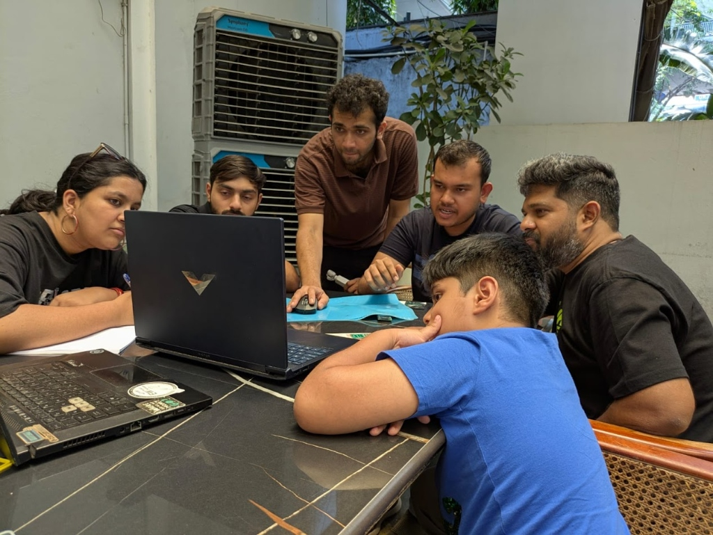
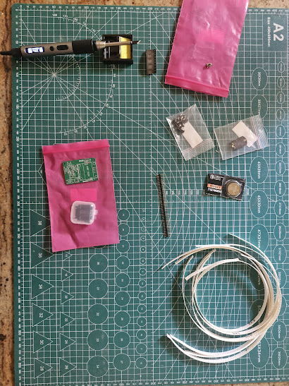
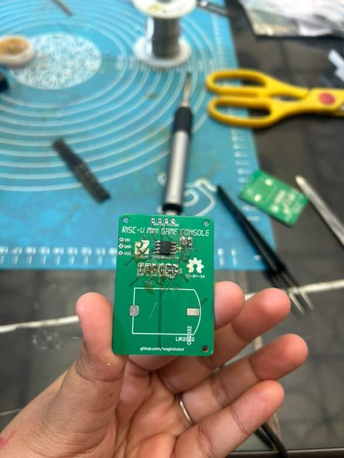
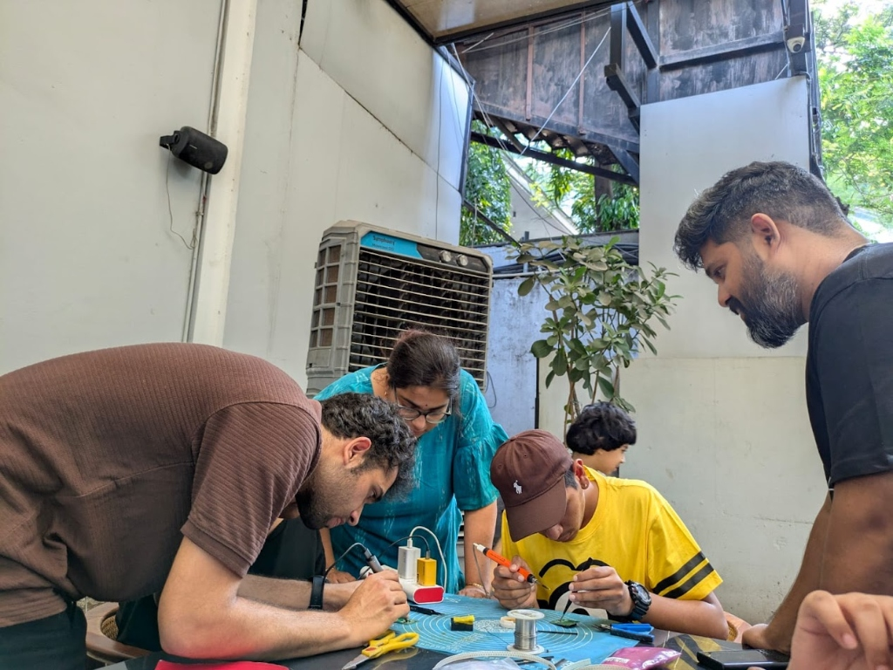
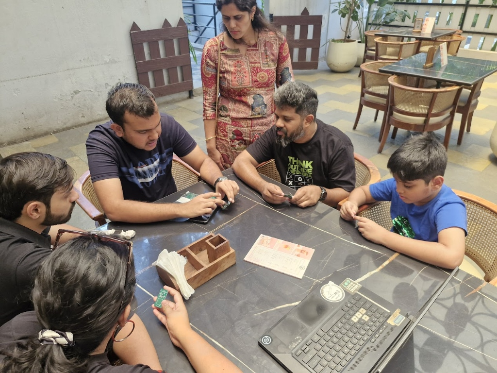
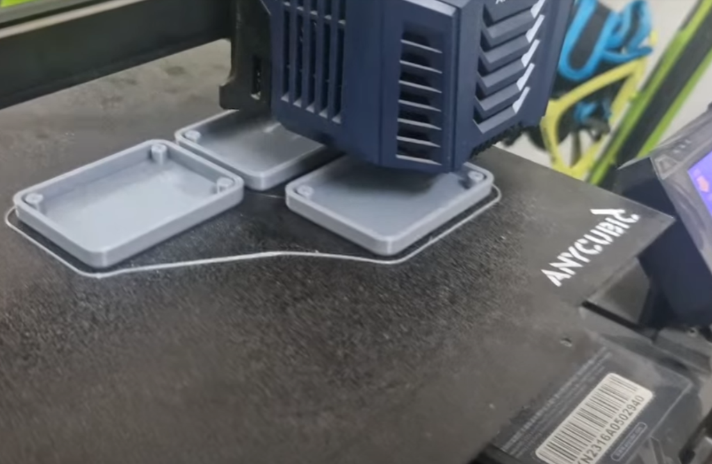

Maker Mission: Game Console Workshop
Organized and led a unique hands-on electronics workshop for 4 participants found through social media ads. The mission: build a functioning handheld game console from scratch.

The Mission
"Maker Mission" was conceptualized as an immersive learning experience. Instead of abstract theory, we focused on building something tangible and fun: a small game console powered by the CH32V003M6 microcontroller (RISC-V architecture), capable of running games like Pac-Man.
The workshop covered the entire lifecycle of an electronics project:
- Fundamentals of PCB Design: Understanding how circuits translate to physical boards.
- Component Sourcing: Identifying parts like microcontrollers, buttons, and displays.
- Soldering Techniques: Practical training on soldering distinct components onto a custom PCB.
- Firmware Basics: Flashing code to the microcontroller to bring the hardware to life.
Hands-On Build Process
We started with a "flat lay" of all the components a bag of parts that would transform into a console.


Teaching soldering was a highlight. Participants learned how to handle a soldering iron safely, apply flux, and make clean joints. We guided them through the tricky process of soldering surface-mount components and the microcontroller itself. It was incredibly rewarding to see their confidence grow with every successful connection.

A Diverse Crew
The group was wonderfully diverse, proving that electronics isn't just for engineers. We had a psychology student, a finance professional, and two dads accompanied by their enthusiastic sons (ages 9 and 13). Seeing such a mix of backgrounds come together to solve technical challenges was inspiring.

The Logistics Nightmare (Behind the Scenes)
While the workshop itself was smooth, the lead-up was anything but. We listed the event on BookMyShow and received a booking in early April. However, the platform provided no way to contact the attendee a major issue because the venue listing was ambiguous ("Country Club" instead of the specific "Funnel Hill Creamery" inside it). We spent weeks worrying about whether our participants would even find us!
To add to the stress, we were hesitant to order expensive components until we were sure the event was happening. We finally placed the order for PCBs and parts with Robu two weeks before the date. Disaster struck when they held up the entire order because of a single missing component. After frantic follow-ups, the kits arrived just one day before the event.
Because of the delay, I had to rush to Koti (a local electronics market) to buy missing passive components. This introduced a new problem: the resistors I bought there had terrible tolerances. The console uses an analog resistor ladder for its buttons to save GPIO pins, meaning the microcontroller distinguishes button presses by measuring specific voltage changes. Because the Koti resistors were off-spec, the controller couldn't consistently recognize which button was pressed. We spent a lot of the workshop debugging this, only realizing the root cause the cheap resistors after the event. Despite these hurdles, we pulled it off!


The Result
Despite the logistical hurdles, the workshop was a resounding success. By the end of the session, what started as a pile of parts was now a fully functional game console. We flashed the firmware, and the screens lit up. The joy of playing a game on a device you built yourself is unmatched.
A special thanks to my friends Rahul and Bhargavi, who stepped in to help run the workshop. Their assistance with everything from teaching soldering to troubleshooting the component issues was a lifesaver. This event wouldn't have been possible without them.